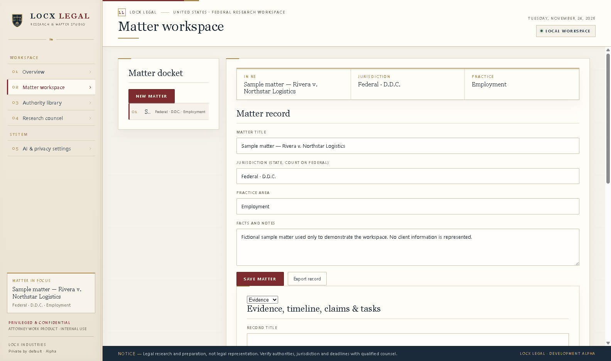

Development alpha · staged for internal review
LOCX Legal
A local research and matter workspace with 49,092 federal authority sections indexed. Still an internal alpha. Not something we're selling or handing out.

What it is
LOCX Legal is a local workspace for organizing a matter and examining the law behind it. It combines matter records and a docket with an indexed federal authority library, source-backed research answers, and explicit controls over whether any model runs locally or remotely.
The federal index in this staged build contains 49,092 sections and searches against real authorities. The sample matter, notes and research answer in the screenshots are fictional and were produced with a local mock provider for interface demonstration only. They are not real client work, legal advice or verified research.
read this first
"Legal research is not legal representation. Authorities, jurisdiction and deadlines must be verified by qualified counsel. AI output can be wrong."
LOCX Legal alpha noticeThe five views



Verified in this staging pass
- Launched from the staged folder with its own bundled Electron runtime
- Isolated-profile QA: 6/6 checks passed
- Source QA 6/6 and Node tests 3/3 passed
- All five views visually reviewed; integrity manifest hashes 43 files
Knowledge-source rights, citation fidelity and currentness; AI reliability and safe-output review; privacy/security audit and clean-machine installation; portable runtime decision; verified live provider, installer and accessible-layout QA; legal review of claims and redistribution rights.